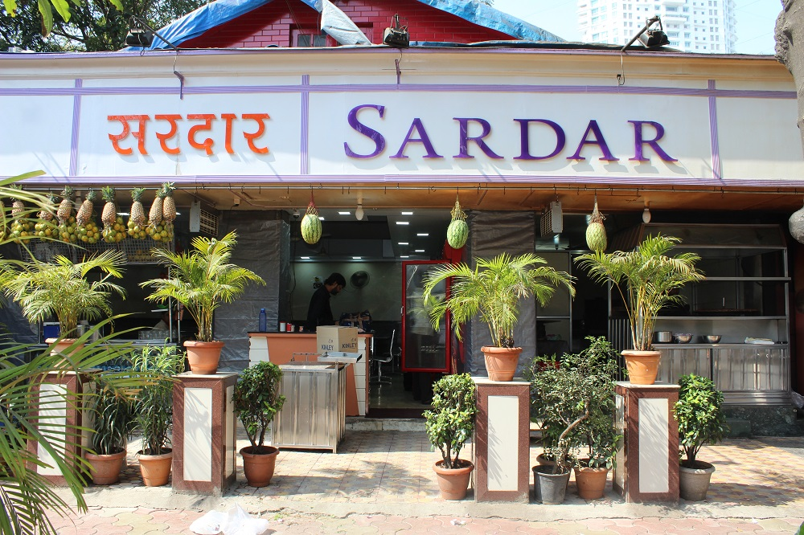
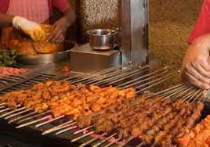
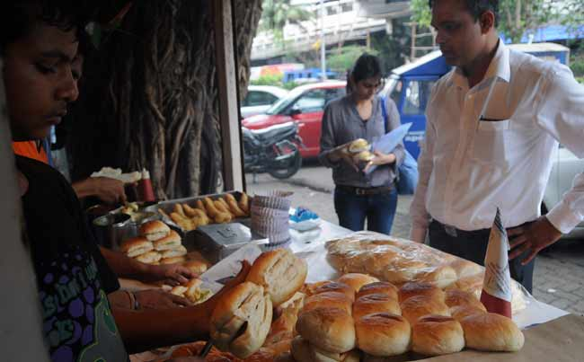
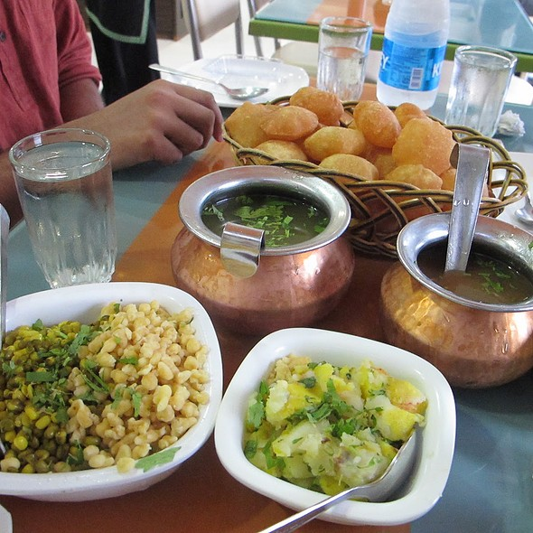
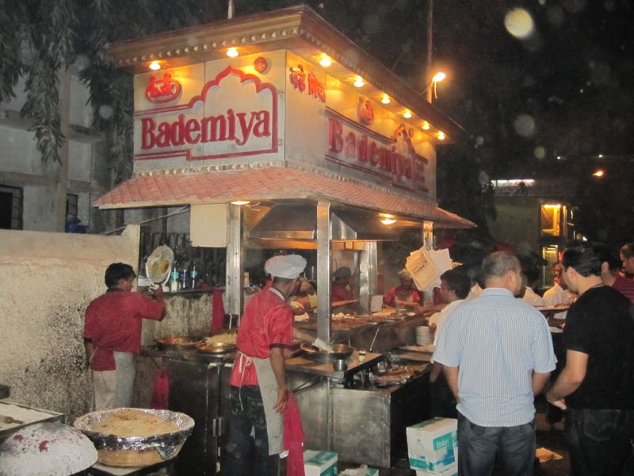
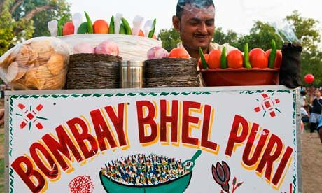
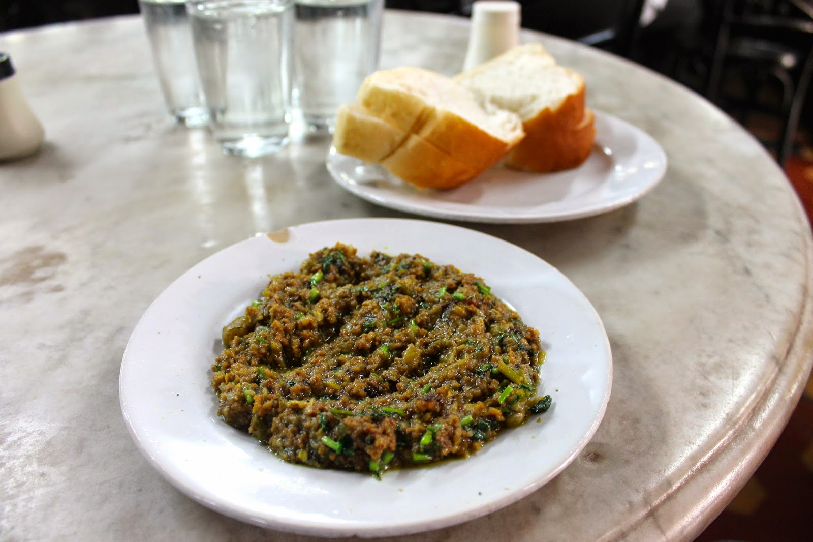
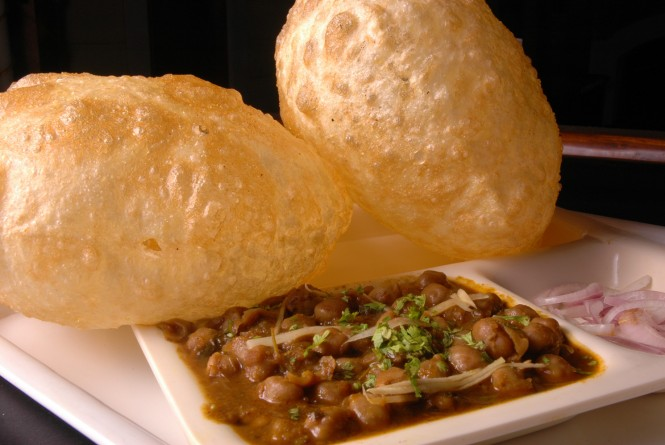
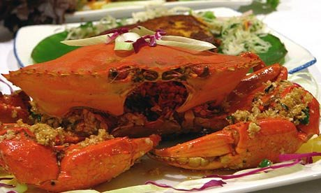
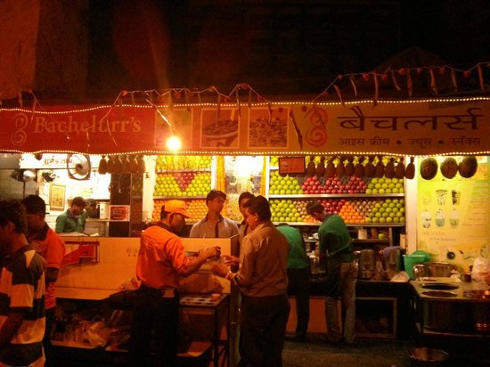

10 of the best street foods in Mumbai
Pav bhaji @ Sardar's
A
five-minute walk from Mumbai Central station, Sardar's Refreshments
specialises in straight-from-the-streets, finger-licking pav bhaji.
It's hidden behind white barriers, but mutter "Pav bhaji?" to any
passerby and they will point you in the right direction. Two metal
plates arrive within minutes: one containing thick vegetable masala
straddled by a slab of butter, the other with fluffy rolls so well
buttered the bread's yellow. Your arteries will tighten at the sight,
but your stomach will thank you. Squeeze some lemon on top and dig in
with your fingers.
• Sardar's, 166-A Tardeo Road Junction, Tulsiwadi, near Tardeo bus depot, +91 22 2494 0208, £1 a serving. Open noon-2am

Kebabs @ Sarvi
Mohammed
Ali Road is the benchmark for skewered kebabs, which hang from smoking
stalls like sizzling curtains. But towards the north end, veer left on
to Dimtimkar Road and head to Sarvi. It's been around for 90 years, has
no sign, looks fire damaged, and grills the most tender beef seekh
kebabs in the city. Crisp on the outside and melting in the middle,
with a hint of mint – rumour has it they grind papaya into the meat.
Get there early evening, as they sell out fast.
• Sarvi,
184/196 Dimtimkar Road, opposite Nagpada Police Station, Byculla West,
+91 98 3353 3305, from Rs78 (£1) for four kebabs. Open 9.30am-11.30pm

Vada Pav @Anand
It's
every Mumbaikar's grab-and-go snack. Potato patties mashed with garlic,
chillies and coriander are dipped in chickpea flour, fried golden, then
laid in "pav" – a springy white bap that's well buttered, spread with
coriander chutney and sprinkled with garlic and chilli powder. Everyone
from students to businessmen flock to the Anand stall, under a purple
and green awning, which whips up more than a thousand a day. An added
touch is a plate of rock-salted fried green chillies, which aren't
nearly as fiery as you might think. Cool off with mini bottles of sweet
lassi from the stall to the left.
• Anand, opposite Mithibai College, Gulmohar Road, Vile Parle West, 20p a bap. Open 7.30am-11pm

Pani puri @ Elco Pani Puri Centre
The
craft is part of the fun: vendors poke a thumb into a crisp fried
sphere, fill it with potato, chickpeas, onion and sprouted lentils,
then dunk it into a sweet-and-sour mix of tamarind and jaggery, then a
liquid blend of coriander, mint and garam masala. Eat it whole, and
unless you have a stomach of steel, don't go anywhere but Elco Pani
Puri Centre, where they use mineral water. Pull up a red plastic stool
and sit on the pavement with Bandra's locals, and the occasional
Bollywood actress.
• Elco Pani Puri Centre, 2/A Elco Market, 46 Hill Rd, Bandra West, +91 22 2645 7677, 50p for two. Open 10am-11.30pm

Chicken tikka rolls @ Bademiya
No
Mumbaikar seems to have been to Bademiya before 3am – a testament to
the late-night allure of its charcoaled, meaty goodness. A glorified
open-air kitchen on wheels, Bademiya sits in a backstreet directly
behind the Taj Mahal Palace Hotel. Waiters in red aprons appear from a
cloud of smoke and hand over plastic menus, but the chicken tikka rolls
are the best option. Slid off skewers, the meat is wrapped in a
steaming roomali roti – as thin and soft as a handkerchief – and topped
with strips of fried onion. No sauce required, its juices are enough.
• Bademiya, Tulloch Rd, Apollo Bunder, Colaba, £1.50 a roll. Open 5pm-4am

Bhel puri @ Sharmajee's and Badshah's
Bhel
puri is one of the most common all-day snacks: a crunchy, cold,
sweet-and-sour mix of puffed rice, sev, chopped onion and potato, and
tamarind chutney. It has to be mixed and eaten on the spot, and most
vendors will concoct their own variations. Chowpatty Beach is the home
of bhel puri, where it should be eaten while strolling along the shore.
Try Sharmajee's (No 22) or Badshah's (No 11), amid the cluster of
stalls opposite the Levi's Store, where rugs are spread out and bhel
puri "touts" will bring it over to you.
• Sharmajee's and Badshah's, Chowpatty Beach, near Charni Road station, 30p per plate. Open all day

Kheema Pav @ Olympia Coffee House
Forget
trawling Colaba's tourist spots for fry-ups and cereal, and try
breakfast the way the locals do it – with a plate of fried minced meat
and hunks of bread to mop it up. Directly opposite the infamous
Leopold's, Olympia does saucers of delicious masala kheema – and don't
forget, this is a coffee house, so top it off with a short, sweet cup.
Olympia is a local Muslim haunt with not a female in sight, but female
visitors shouldn't be put off: the waiters and customers are friendly,
courteous and no one bats an eyelid.
• Olympia Coffee House, Rahim Mansion, 1 SB Singh Rd, Colaba, +91 22 2202 1043, £1 a plate. Open 7am-midnight

Channa bhatura @ Cream Centre
As
a rule, restaurants with laminated menus showing photos of their food
aren't to be trusted. Cream Centre is an exception. It does a version
of channa bhatura that's a bit on the oily side, but it's rated the
best in Mumbai by the hordes of students, families and workers on
breaks. Sit tight in your booth as a football-sized, deep-fried puri
arrives alongside a bowl of creamy masala chickpeas, diced potatoes and
onions. Poke a finger in the top and watch the puri deflate slowly into
a chewy bread for scooping up the masala.
• Cream Centre, Fulchand Niwas 25/B Chowpatty Sea Face, +91 22 2367 9222, £2 a serving. Open noon-11.30pm

Crab @ Mahesh Lunch Home
Strictly
not street food, but it's a sin to come to Mumbai and not eat crab.
Trishna is excellent, but full of expats and tourists, so try Mahesh,
around the corner from the Mocambo Café, in Fort. Order the jumbo
butter garlic crab with a roomali roti to wipe up the crunchy bits of
garlic and chilli. If you're unsure about portions, waiters will
happily bring your crab to the table to wave a leg at you. There's only
one way to eat it – with a bib and both hands, making as much mess as
you like.
• Mahesh Lunch Home, 8-B Cawasji Patel Street, Fort, +91 22 2287 0938, £10. Call for opening hours

Juices and milkshakes @ Bachelorr's
Bachelorr's
(yes, they've added an extra "r") is the definitive hangout for
smoothies, shakes and juices. It's been in business since the 1940s and
has generated a loyal following, who gather by the roadside kiosk
during warm evenings, perched on car bonnets and in open boots. The
cream-and-strawberry milkshake is a classic, but it also churns out
numerous chocolate variations – from Classic Chocolate and Black Gold
Premium to Liquid Marble – along with a host of fresh lime, coconut
water and lychee juices.
• Bachelorr's, Chowpatty Sea Face,
opposite Birla Krida Kendra, near Charni Rd station, +91 22 2368 1408,
from £1-2. Open 3pm-11pm
